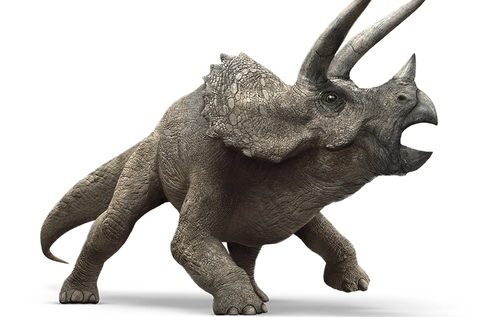

The Triceratops is a quadrupedal herbivore that lived during the late Cretaceous
period—or about 68 million years ago. This dinosaur was first discovered near Denver, Colorado in 1887.
When it was first discovered it was believed to have been an unusual type of bison.
However, it was discovered rather quickly that this wasn’t just an unusual form of
bison but was actually a dinosaur. Since then, Triceratops specimens have been found all
over North America. The name of this dinosaur translates into “3 horned face” from the
Greek “Tri” meaning three and the word “keratops” meaning face.
It is believed that Triceratops ate mostly low growth vegetation such as
ferns and shrubbery. Scientists believe that their large volume of teeth suggested
that they ate large volumes of fibrous plant material each day and that these large
batteries of teeth were needed to replace the ones that were damaged by wear and tear.
Currently, there are two theories which suggest what the horns of the Triceratops were used for.
One theory says that this dinosaur’s horns were used to defend itself in
combat against other dinosaurs—particularly the T- Rex—which is known to have
been the mortal enemy of this animal. The second theory suggests that this animal’s horns
served a very limited purpose in combat and was instead used during courtship rituals.
Although the word Triceratops means 3 horned face, this dinosaur actually only had 2 proper horns.
The third horn was made out of soft proteins and wasn’t a proper horn. In fact, scientists aren’t really
sure what the purpose of this false horn is. Another interesting fact about triceratops is that almost one
third of the length of the Triceratops was its skull.
A typical Triceratops was approximately 26 feet long (or 8 meters),
while its skull was approximately 7 feet long (or 2.33 meters long).
The Triceratops could weigh anywhere between 6 and 12 tons. Which is about the
weight of a modern diesel truck. This dinosaur measured over 10 feet in height.
That is as tall as a first story building. This dinosaur has approximately 400 to
00 teeth during the course of its lifetime. However, it didn’t use all of these teeth
at one time. It was constantly replacing them throughout its lifetime as it wore them out.